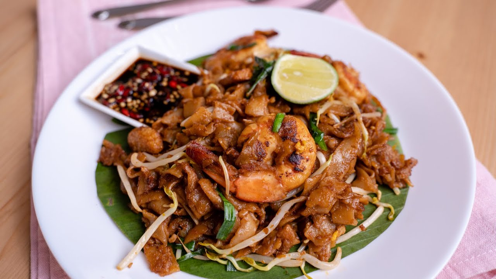
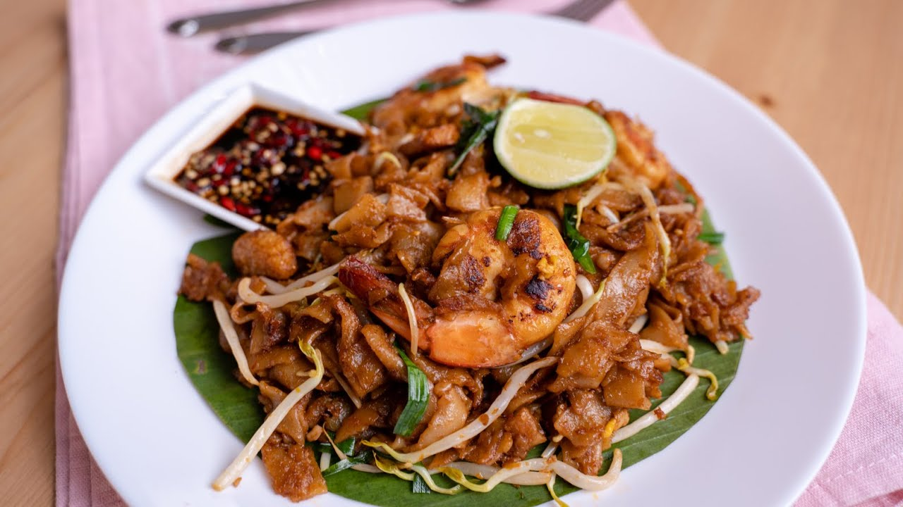

Overview
Purpose
Looking for the best out of the best Asian Cuisine recipes to try? Struggling to find precise, simple and clear recipes that meet your expectation? We offer numerous quality-guaranteed recipes from all around Asia as they are tested by professionals before we get them published on our site. We retain the quality of our published recipes by analyzing every step of the recipes, making sure every piece of information is accurate, and assuring the richness and satisfaction of the flavor meet the standard of your expectations. Our priority is always your contentment to enjoy delicious Asian food! You no longer need to worry about trying to search or decide which Asian recipe is worth to try (there are thousands online, and that can be too many to choose from) as we really value your time. We have done the quality filtering for you and please don’t hesitate to be a part of us!
Audience
We invite all cook, even beginners to try out the recipes we offer on this site regardless your age or skills in cooking. We have made sure every step and instructions of the recipes given are clear and easy to understand, so you won't get lost. You can also leave comments or questions on the comment section provided for each recipe, so you could find intended answers if you may have troubles. We want you to get the best experience by trying out our recipes and enjoy its delicious taste. Please feel free to also use the comment section to share your experience and feedback! We love hearing those, so we can keep improving the quality of our site for you and your needs.
Branding
Website Logo
Style Guide
Color Palette
Palette URL: https://coolors.co/396e94-e7c24f-a43312-381d2a-aabd8c| Primary | Secondary | Accent 1 | Accent 2 |
|---|---|---|---|
| #E7C24F | #A43312 | #AABD8C | #396E94 |
Typography
Heading Font: IM Fell French Canon SC
Paragraph Font: Lato, Poppins, sans-serif
Our desire for you:
This website consist of various asian recipes that we recommend you to try. The authenticity of each dish will give you the satisfaction you desire. All you got to do is to follow the simple instructions given and let that guide you through your cooking.
We divided our recipes into 2 sections: Spicy & Non-Spicy
We understand that not everyone is a big fan of spicy food, so we filtered our recipes into 2 categories. You get to decide whichever you prefer because your experience is what matters most to us. The links to access the recipe is as below:
Navigation
Site Map
Content
Home page
The diversity of Asian Cuisine!
Images for the Home page


Non-spicy
Welcome to the non-spicy section! See below for the recipes available:
Images for the Page 2
 

Spicy
Welcome to the spicy section! See below for recipes availables:
Images for the Page 3


Wireframes
Create three wireframes for your site. One for each page and list them here
Home
[Any additional details about home that the wireframe does not make clear]

[Page 2]
[Any additional details about page 2 that the wireframe does not make clear]

[Page 3]
[Any additional details about page 3 that the wireframe does not make clear]